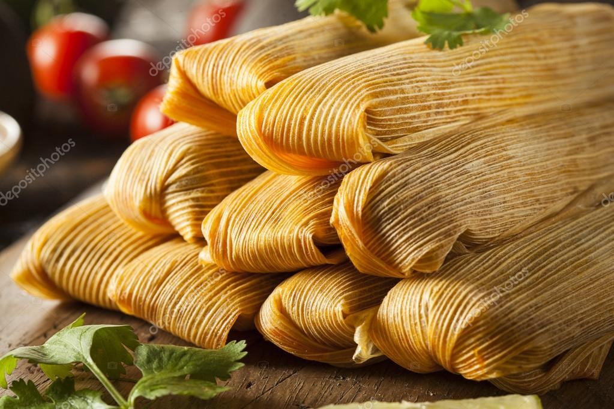

Tamale

Here is a picture of the finished recipe.
This recipe will have you in nostalgia of what home smells like.
Prep time 15min
Cook time 55min
Servings 8
- 1 (15 ounce) can pumpkin
- 1 (14 ounce) can EAGLE BRAND® Sweetened Condensed Milk
- 2 large eggs large eggs
- 1 teaspoon ground cinnamon
- 1/2 teaspoon ground ginger
- 1/2 teaspoon ground nutmeg
- 1/2 teaspon salt
- 1 (9 inch) unbaked pie crust
- Preheat oven to 425 degrees F
- whisk pumpkin in, sweetened condensed milk,eggs,spices
and salt in medium bowl until smooth
- Pour into crust
- Bake 15 min
- Reduce oven temp to 350 degrees F and contninue baking
35-40 minutes or until knife inserted 1 inch from
crust comes out clean
- Cool and garnish as desired
- Store leftovers covered in refrigerator